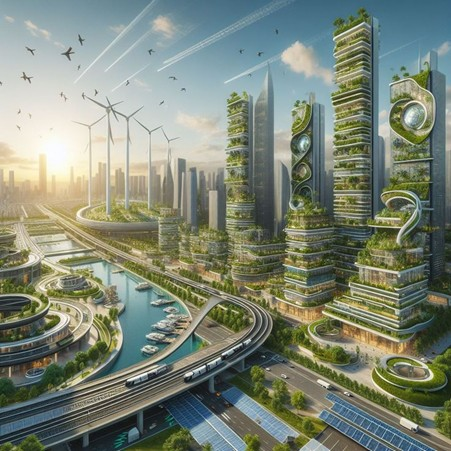

Weather is not just a backdrop for life – it is the data language of Earth. From temperature to rainfall to storms, all are streams of information that tell the story of a changing climate.
When wind is “painted” with data, we see the invisible come to life. Air currents become moving art – where the atmosphere itself sketches itself.
When light and weather data become visual art
Imagine a city that “feels” the weather – where buildings change color with temperature, parks light up when pollution increases. As data becomes the basis of design, architecture can also respond to nature.
Feeling the ocean with light
Interactive spaces that allow us to “feel” climate data through light, movement and sound. A silent conversation between people and the environment – full of life and reminders.
Image Credits:
Madison weather data for the year: source
Wind Map: source
New Light on Rome 2000+: source
NASA Global Rain: source
Future City Illustration: source
Shoal of Shadows: source
Hourglass Nature vs Pollution: source